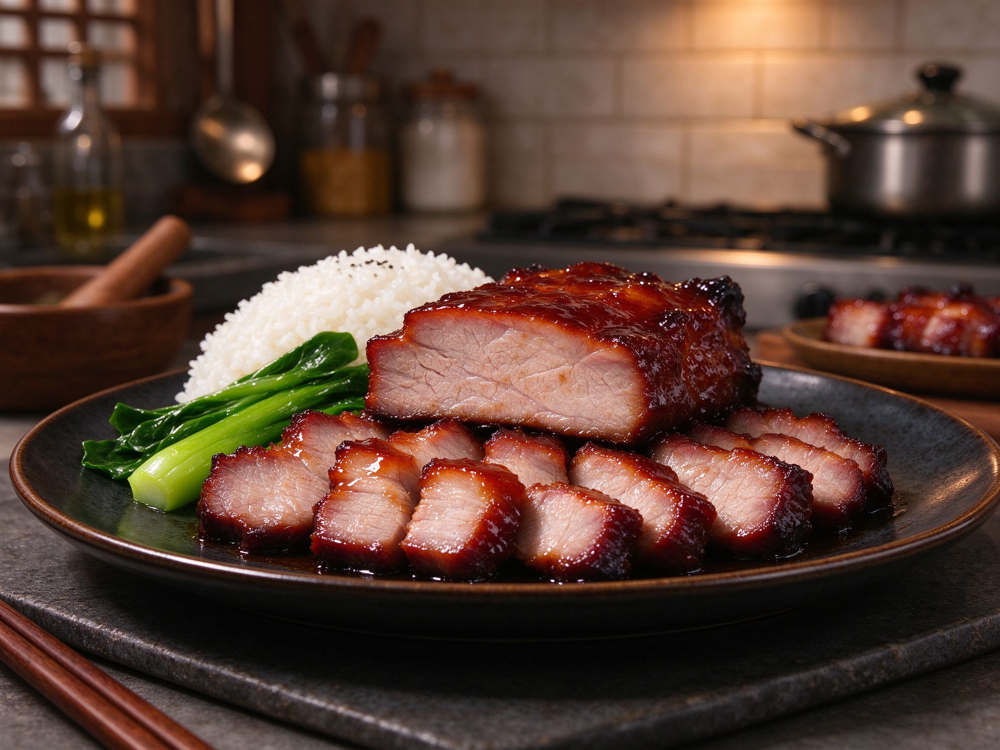

Char Siu: Chinese BBQ Pork You Can Make at Home
Char siu is the gleaming, honey-red roast pork hanging in Cantonese shop windows — and the good news is that the flavor comes almost entirely from the marinade. No charcoal pit, no commercial rotisserie: a home oven gets you 90% of the way there.
The Cut: Pork Shoulder or Pork Butt
Pick a pork shoulder (butt) cut into strips about 2 inches thick and 6-8 inches long, or use pork tenderloin for a leaner, quicker version (it dries out faster, so watch it). The fat in the shoulder is what keeps the meat juicy and gives char siu its signature tender texture. For more on choosing the right cuts and sauces, see our soy sauce guide — char siu is a masterclass in how one marinade does all the work.
The Marinade: The Whole Flavor Story
- 3 tbsp soy sauce
- 2 tbsp hoisin sauce
- 2 tbsp honey (plus 2 more for the glaze)
- 1 tbsp Chinese cooking wine (or dry sherry)
- 1/2 tsp five-spice powder
- 2 cloves garlic, grated
- 1/4 tsp red food coloring (optional — traditional color; skip it for a natural look)
Whisk everything together, coat the pork strips thoroughly, and marinate in the fridge overnight, or at least 6 hours. This is not a 30-minute marinade — the sugar and soy need time to work into the meat.
Roast: The Home-Oven Method
- Preheat the oven to 425°F (220°C).
- Line a tray with foil and set a wire rack on top — this keeps the pork above the dripping juices so it roasts, not steams.
- Roast for 20 minutes, flip, and roast 15 minutes more.
- Mix the reserved marinade with 2 tbsp honey and brush it on both sides.
- Broil (grill) for the last 2-3 minutes until the edges char and caramelize — watch it closely; honey burns fast.
- Rest 10 minutes, then slice against the grain.
Serve It Like a Cantonese Diner
- Char siu rice — sliced over steamed rice with blanched greens and a fried egg (the classic).
- Char siu noodles — toss with chow mein-style noodles and the pan juices.
- In bao or rolls — dice it into fluffy mantou buns or sandwich rolls.
- Freezer bonus — it freezes beautifully; slice and freeze in portions for quick weeknight bowls.
Three Mistakes to Avoid
- Marinating too briefly — pale, bland char siu is under-marinated char siu. Go overnight.
- Skipping the wire rack — pork sitting in juices boils instead of roasting, and you lose the caramelized edges.
- Over-broiling — honey turns bitter when it burns. Two to three minutes under the broiler, eyes on it.
Char siu is one of those dishes that makes a home kitchen feel like a Cantonese restaurant. The marinade is simple, the oven does the work, and the leftovers are the best part of the week.